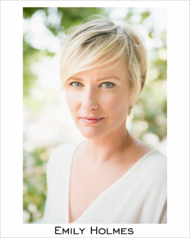
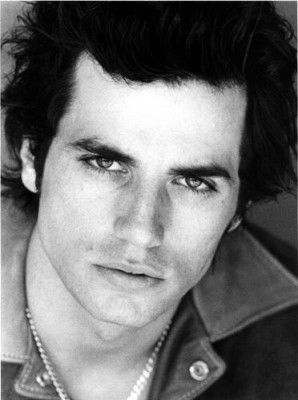
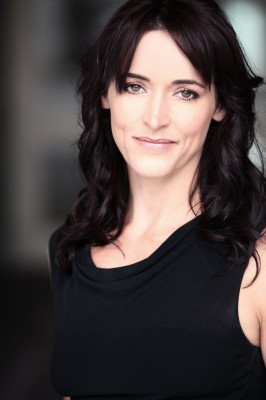
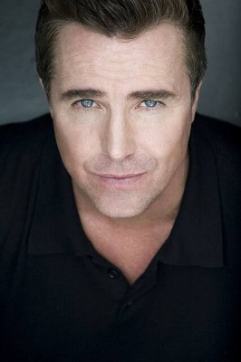
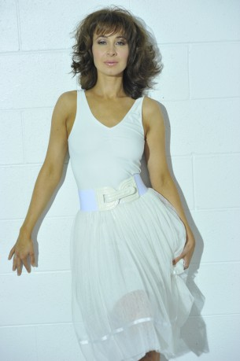
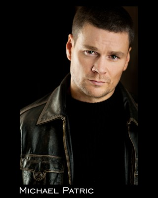

#3237 Magic Beyond Words - Die zauberhafte Geschichte der J.K. Rowling
Alternativ: Magic Beyond Words: The J.K. Rowling Story


 IMDB-Wertung: 6.7 / 10
IMDB-Wertung: 6.7 / 10  Metascore: 0
Metascore: 0 
Das Biopic erzählt den unvergleichlichen Werdegang der erfolgreichen Harry Potter -Autorin J.K. Rowling: von ihrer turbulenten Kindheit über die schwere Zeit, in der sie als alleinerziehende Mutter auf Sozialhilfe angewiesen war, bis hin zum großen Ruhm, der mit der Veröffentlichung von Harry Potter und der Stein der Weisen einsetzte.
Jahr: 2011
Dauer: 82 Minuten
FSK:
Land: USA Studio: CinemaxTonspuren:
Untertitel:
Auflösung: SD (704x400) Größe: 799 MB
Genre: Drama, Biographie
Regisseur: Paul A. Kaufman
Drehbuch: Jeffrey Berman, Tony Caballero, Sean Smith
Soundtrack: Jeff Toyne
Darsteller:
- Poppy Montgomery als Joanne K. Rowling
-  Emily Holmes als Diane Rowling
-  Antonio Cupo als Jorge Arantes
-  Janet Kidder als Anne Rowling
- Aislyn Watson als Joanne Rowling at 8
- Marie West als Aine
- Lisa Norton als Jill
-  Paul McGillion als Pete Rowling
- Sarah Desjardins als Diane Rowling, 13-15
 Christine Chatelain als Bryony
Christine Chatelain als Bryony- Wesley MacInnes als Sean Harris
- Patti Allan als Mrs. Morgan
- Charles Jarman als Amnesty International Supervisor
- Glynis Davies als Case Worker
- Evan Bird als Ian Potter
- Kirsten Slenning als Young Mother
- Kirsten Robek als Manager
-  Loretta Walsh als Dark-Haired Mother
- Jacqui Kaese als Bookstore Clerk
- Eliza Faria als Diane Rowling, 6
-  Michael Patric als Roger
- Ivan Wanis-Ruiz als Swarthy Man in Club
- Lee Vincent als Postal Clerk
- Beatrice King als Receptionist
- James Kot als Blue Shirt Agent
- Derek Gilroy als Delivery Man
- Taya Clyne als Jessica Rowling, 8
- Graison Foster als BBC Reporter
- Lilah Fitzgerald als Patricia Parkinson
- Mike Coleman als Postal Troll
- Micha Baum als Peter Rowan
- Yolanda Corbett als Restaurant Patron , uncredited
- Julia Rhodes als Reporter , uncredited
- J.K. Rowling als Herself , archive footage, uncredited
- Christian J. Stewart als Restaurant Patron , uncredited
- Madison Desjarlais als Joanne Rowling at 17
- Andy Maton als Christopher Little
- Greigh Laschuk als Dr. Neil Murray
 Andrew Kavadas als Professor Nettleship
Andrew Kavadas als Professor Nettleship- Gina Stockdale als Trolley Lady
- Olivia Wakehams als Tough-Looking Girl
- Diego Bedoya als Tall Policeman
- Beatrice Zeilanger als Administrator
- Lindsay Lomax als Agent
- Terri Anne Taylor als Janet Hogarth
- Douglas Abel als Chancellor
- Gabriel Patrich als Register
- Fortune Aknin als Karen Bittinger
- Jack Spong als Robert Walden
- Sophia Bosley als Jessica Rowling, 4-8 months
Datei: X:\2011(G-M)\Magic Beyond Words - Die zauberhafte Geschichte der J.K. Rowling (2011, FSK, 704x400).avi seit 20.02.2016
Festplatte: HD 2011(G-Z)
 Es gibt insgesamt 100 Filme in der Gruppe '2011(G-M)'
Es gibt insgesamt 100 Filme in der Gruppe '2011(G-M)'